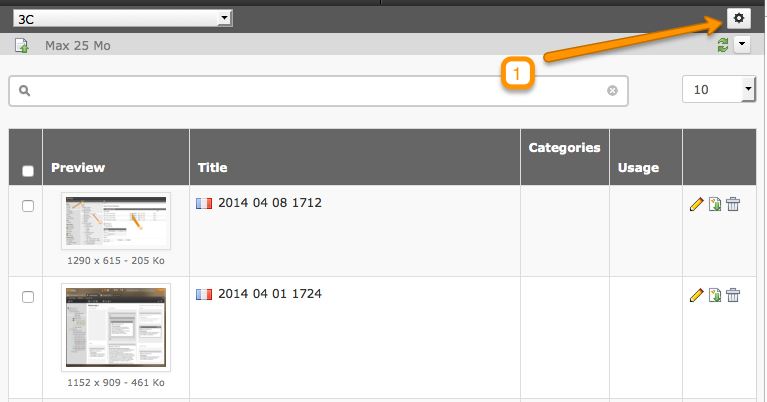
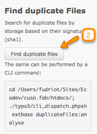
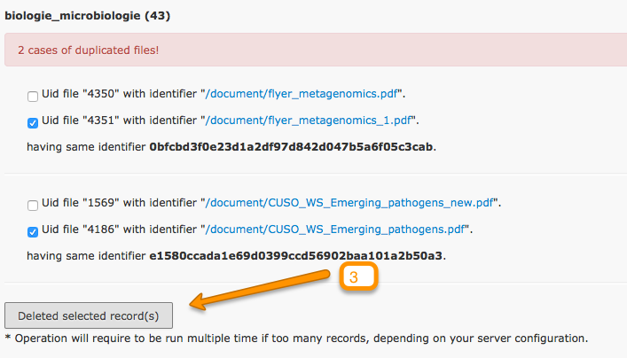

Media extension - identify duplicate files!
I am developing for some time already an extension for Media management for TYPO3 CMS, with a focus on advanced management of metadata and filtering.
I just added a new tool that allows to detect duplicate files. This allows for example to identify a file that has been inadvertently uploaded several times by a user and which is double in the storage. The tool produces a list that displays these duplicates, then you can select the files to be deleted.
This addition complements the list of existing tools. There was the possibility already identify missing or duplicate files to records in the database of businesses.
With pictures
Open tools panel:

Open the tool:

Select duplicate files:

Installation
To test this feature, you must fetch the source from the Git repository, before it get published on the TER. You must also update the source of Vidi which is the underlying engine of Media.
# Clone du master de Vidi
cd typo3conf/ext
git clone git://git.typo3.org/TYPO3CMS/Extensions/vidi.git
# Clone du master de Media
cd typo3conf/ext
git clone git://git.typo3.org/TYPO3CMS/Extensions/media.git
Sponsor
This feature was sponsored by Visol which I warmly thank you.
This article is available as French also.